Emoto Concept
A robotic system to give body and
expression to the AI on your phone
Collaborators
Gautam Bose
(Advised by Professor Dan Lockton)
Project Space
Emoto is a mixed hardware and software concept for a platform of different interactions meant to reframe how people relate to their phones. Currently funded by an undergraudate research grant. The live demo debuted at CMU's exhibition "Where are the Humans in AI?" (our answer: 'on their phones').
Emoto's Website
My Role
Amongst other things, to communicate the concept for the live demo/end deliverable I had made Emoto's 'eyes' tied to sensor data and an iOT backend that communicated between the phone and the PI in the hardware.
Excerpt from Emoto's Website:
Human/AI interactions was the last theme from our junior second semester design studio. This is where we left off on Emoto.See Emoto's website for the product spiel. See the medium blog for full process documentation. This site is just a summary from my perspective
Tools:
Drawing
Lots of Keynote
Javascript
Shiftr
HTML/CSS
At the time I was fascinated with the social/interaction problems with IPA's, the polarized humanization/abstraction in the form of home assistants, the attention economy and rising efforts to control our addiction to mobile smartphones, and wow I could keep on going — but for this project I pushed the idea of it trying to reframe our relationship to phones, and expanding the nonverbal communication methods + expressiveness of an IPA through animated motion and coordinated hybrid digital-physical interactions.
The original studio project was only a few weeks, so there wasn't enough time to fully research, test and iterate on a comprehensive interaction system/platform, but a lot of my time was spent story boarding, drawing out forms (eyes and body), and coding the digital interface/iOT backend for Emoto to at least communicate the hybrid digital physical concept of an AI sidekick that comes to life from your phone.
Abridged Process
- 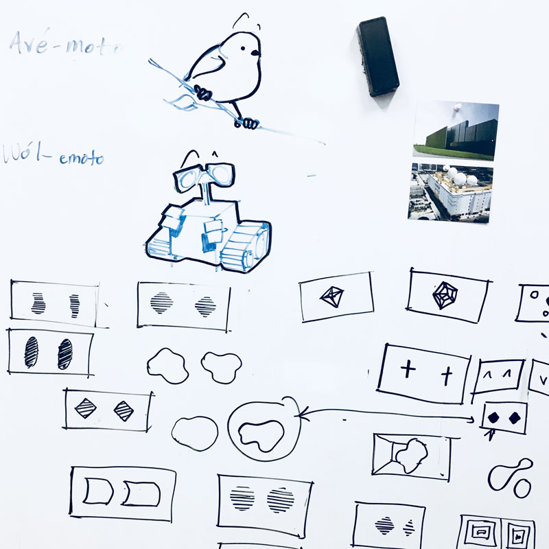
Whiteboard braindumping with Lucas
- 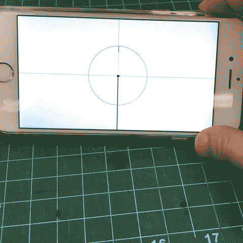
Warming up to animating with sensors
- 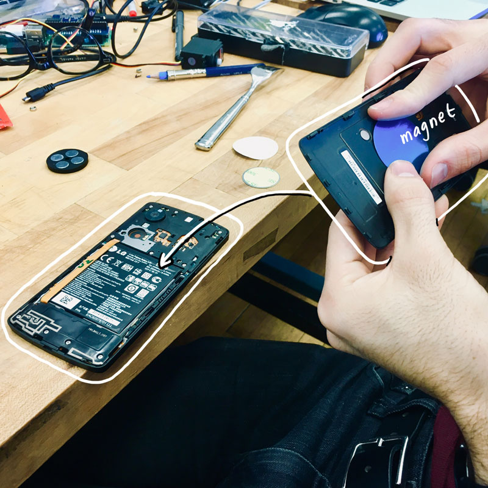
Hide it in the phone = Invisible mounting
- 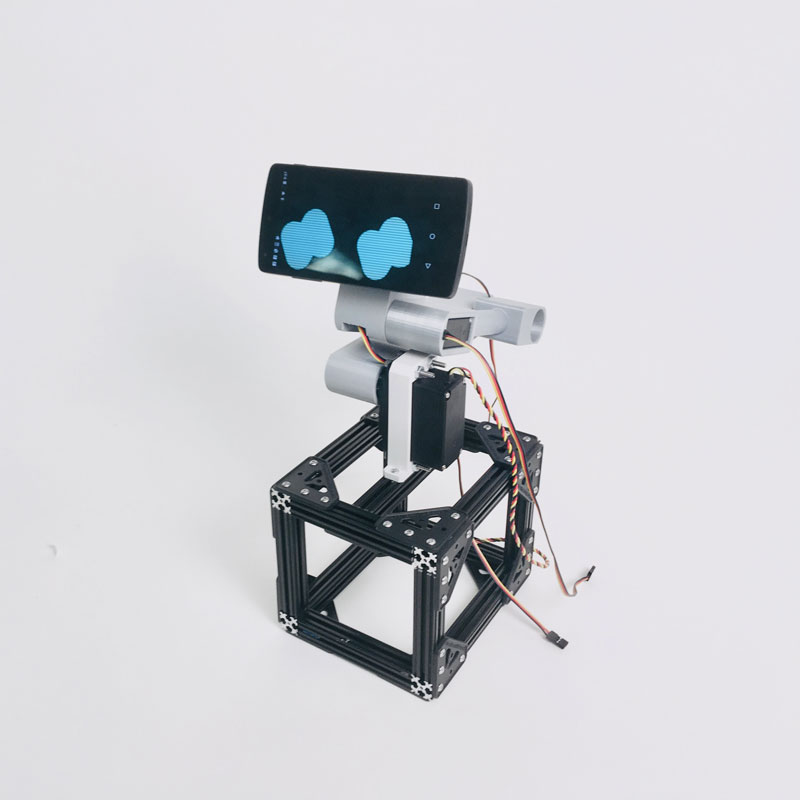
Nexus: Cheap, light, but no browser caching...
- 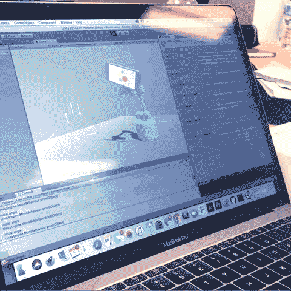
Trying to generate joint angles for animation through a model rigged in Unity
- 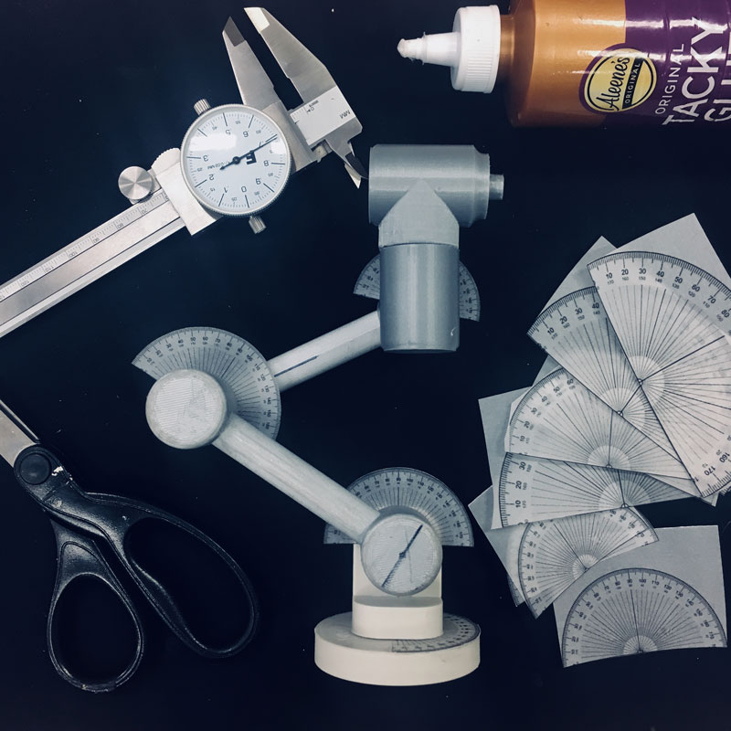
Protractors stuck to joints = much easier/faster animation prototyping. Ended up going with a keyframe styled method...
- 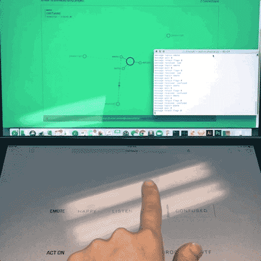
Making sure WOZ sends to python reciever
- 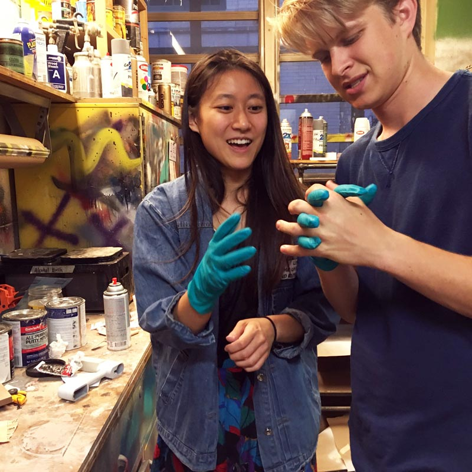
Conner teaches me how to spray paint models properly
- 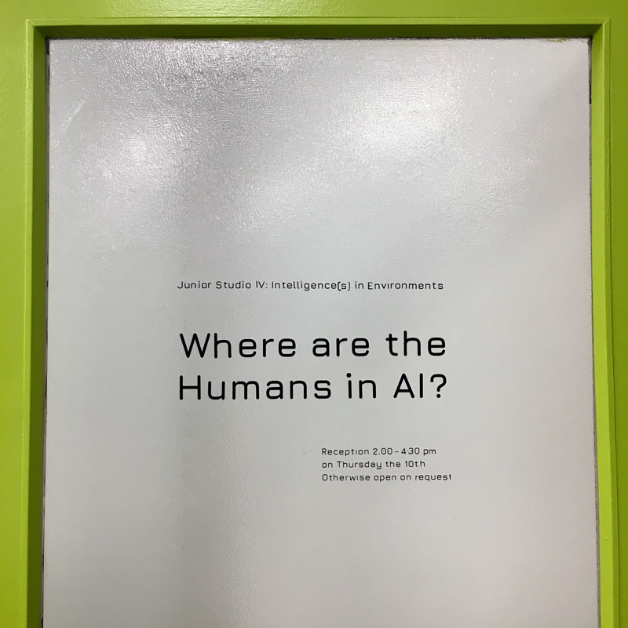
That vinyl title was a pain to put on
- 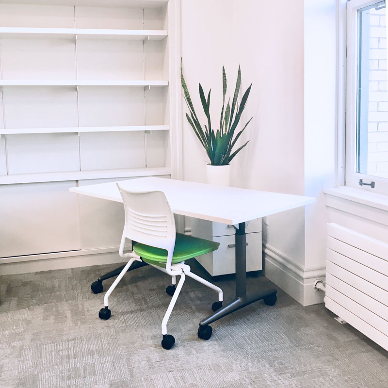
Plant stolen for setting mood in exhibition space.
- 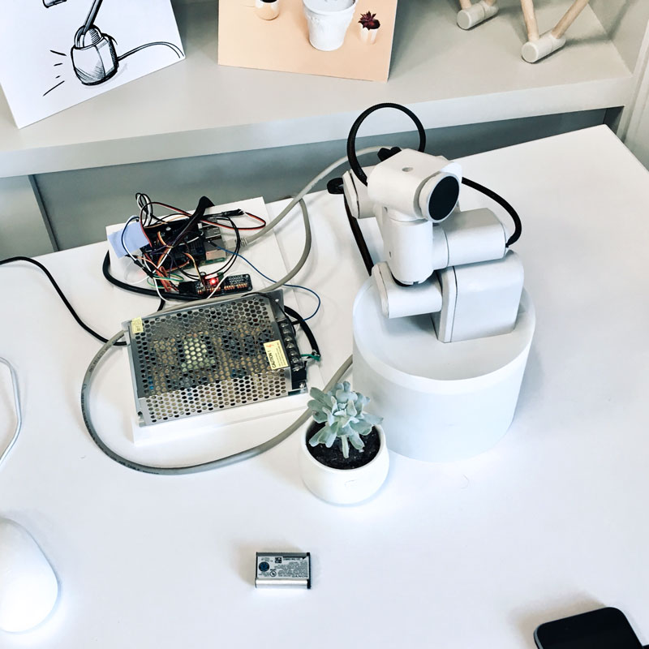
Some messy innards. Servo hats for PI's and such.

Setting up for show above and below
- 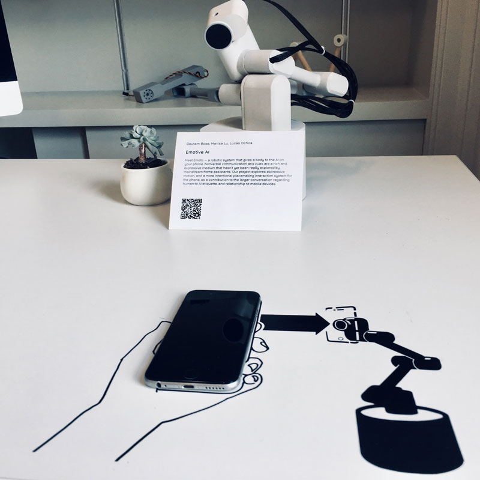
Show time. Vinyl instructions and handy exhibition labels
Live sequence from someone's cellphone at the show